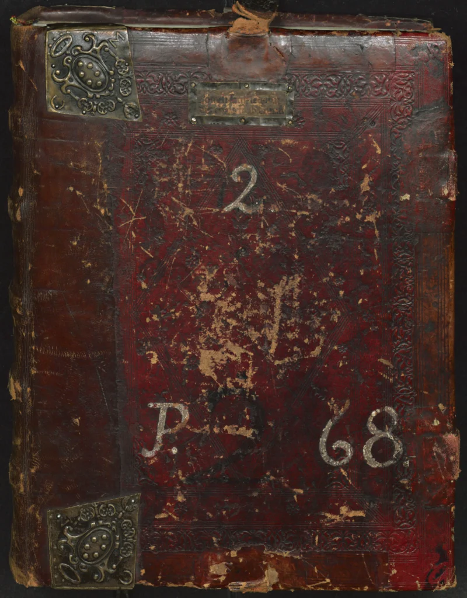
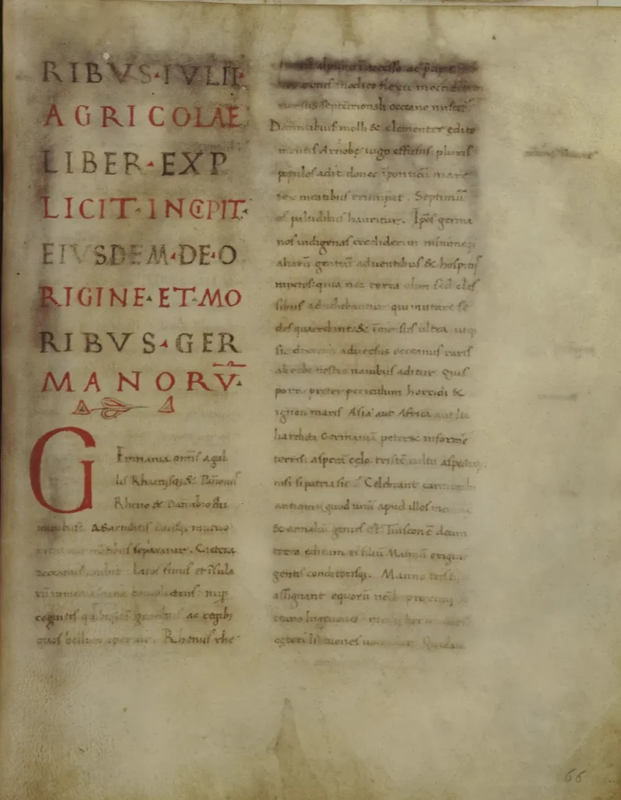
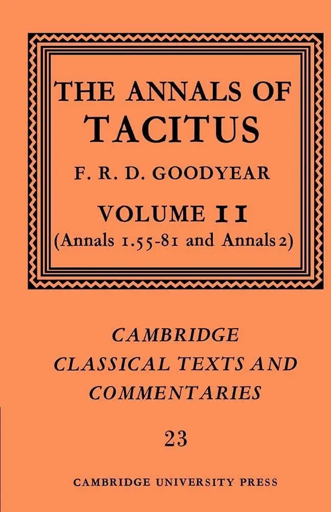
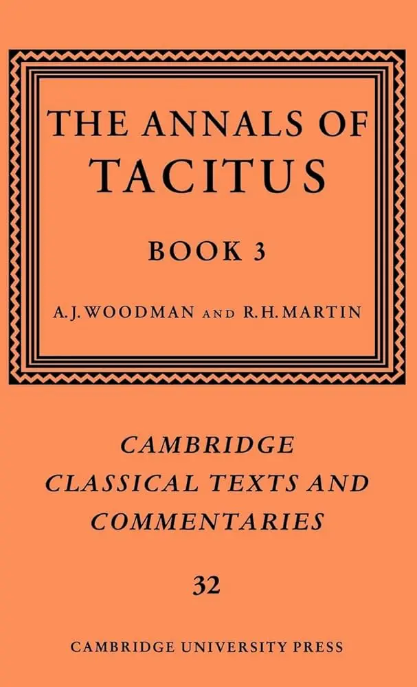

Publio Cornelio Tácito, considerado el más grande de los historiadores de la antigua Roma, dejó un legado literario fundamental para la comprensión de la historia del Imperio Romano. Sus obras principales incluyen los “Anales” y las “Historias”. La preservación y transmisión de sus manuscritos a lo largo de los siglos es un tema de gran interés histórico y filológico. Aquí se detalla muy brevemente y a grandes rasgos la naturaleza y la historia de estos manuscritos.
Obras Principales de Tácito
-
Anales (Annales): Relatan la historia de Roma desde la muerte de Augusto en el 14 d.C. hasta el final del reinado de Nerón en el 68 d.C.
-
Historias (Historiae): Cubren el período desde el año 69 d.C. (el “año de los cuatro emperadores”) hasta posiblemente el reinado de Domiciano, aunque solo se han conservado los primeros libros.
-
Germania (De origine et situ Germanorum): Una descripción etnográfica de los pueblos germánicos.
-
Agricola (De vita et moribus Iulii Agricolae): Una biografía de su suegro, Julio Agrícola, con énfasis en su conquista de Britania.
-
Diálogo sobre los oradores (Dialogus de oratoribus): Una obra sobre la oratoria en Roma.
Manuscritos y Transmisión Textual
Historia de los Manuscritos
-
Supervivencia Medieval: Las obras de Tácito no fueron ampliamente copiadas durante la Alta Edad Media, y varios de sus textos se perdieron parcialmente. Sin embargo, los manuscritos que sí sobrevivieron jugaron un papel crucial en la transmisión de su obra.
-
Redescubrimiento: Durante el Renacimiento, hubo un renovado interés en las obras clásicas, lo que llevó a la búsqueda y preservación de los manuscritos antiguos.
Manuscritos Principales
Codex Mediceus (Mediceo I y II):
- Mediceus I (M1): El primer manuscrito mediceo de Tácito, la fuente más antigua del texto de los seis primeros libros de la obra que llamamos “Anales”, fue copiada en el siglo IX de un manuscrito en minúsculas que había sido copiado de un manuscrito en capiteles rústicos. Este manuscrito se encuentra en la Biblioteca Medicea Laurenziana. Plut.68.1. Tacitus. Codex Laurentianus Mediceus 68.1. Phototypice editus Lugduni Batavorum, A. W. Lijthoff, 1902 F.1.5 (7). Enlace: https://tecabml.contentdm.oclc.org/digital/collection/plutei/id/1334704/rec/1.

Reproducción del M1. Principio del libro primero de los Anales. AB EXCESSU DIVI AUGUSTI.
- Mediceus II (M2): Contiene los libros XI-XVI de los “Anales” y los libros I-V de las “Historias”. También se encuentra en la Biblioteca Medicea Laurenziana. Plut.68.2. Tacitus. Codex Laurentianus Mediceus 68.2. Phototypice editus Lugduni Batavorum, A. W. Lijthoff, 1902. F.1.5. (7). Enlace: https://tecabml.contentdm.oclc.org/digital/collection/plutei/id/1335097/rec/1.

M2. Piatto anteriore (portada).
-
Codex Aesinas:
-
Este manuscrito es significativo porque incluye partes de la “Germania” y el “Agricola”. Su historia es interesante debido a su redescubrimiento en el siglo XV y su viaje a través de varias colecciones antes de establecerse en Italia.
-
En la actualidad se pueden ver reproducciones fotográficas del manuscrito en varios sitios en línea.
-
Tácito, Cornelio. Reproducción fotográfica del Codex Aesinas (Iesi Codex) del Bellum Troianum de Dictys y del Agricola y Germania de Tácito]. 19–], 1900. Enlace persistente https://nrs.lib.harvard.edu/urn-3:fhcl:29001770. Descripción Tácito, Cornelio. Reproducción fotográfica del Codex Aesinas (Iesi Codex) del Bellum Troianum de Dictys y del Agricola y Germania de Tácito]. 19–], 1900. Departamento de Desarrollo de la Colección del Repositorio. Biblioteca más amplia. clorhidrato. Institución Universidad de Harvard. Consultado el 19 de mayo de 2024.
-
Tácito, Cornelio. Reproducción fotográfica del Codex Aesinas. Dettaglio manoscritto : Bellum Troianum; De vita Iulii Agricolae liber; De origine et moribus Germanorum. Biblioteca nazionale centrale di Roma. Digitalización completa disponible para consulta en la TECA Digitale de la Biblioteca Nacional Central de Roma. En la Biblioteca Nacional Central de Roma, en la Sala de Manuscritos y en el Centro de Estudio del Manuscrito se puede consultar un microfilm realizado antes de la inundación del 6 de noviembre de 1966, tras la cual el manuscrito sufrió graves daños. Enlace: http://digitale.bnc.roma.sbn.it/tecadigitale/manoscrittoantico/BNCR_Ms_VE_1631/BNCR_Ms_VE_1631/1. Consultado el 19 de mayo de 2024.

Codex Aesinas. Principio de La Germania. De origine et moribus Germanorum, c. 66r. “La Germania, en conjunto, está separada de las Galias, Retias y Panonias por el Rhin y el Danubio, y de los Sármatas y Dacos o por los montes, o el miedo que se tienen los unos a los otros.”
- Codex Leidensis
-
El “Codex Leidensis” contiene el “Dialogus de Oratoribus” de Tácito, una obra que explora la decadencia de la oratoria en Roma y compara la oratoria de épocas pasadas con la de su tiempo.
-
Este manuscrito data del siglo XV. Aunque es relativamente tardío en comparación con otros manuscritos de Tácito, su valor radica en la preservación del “Dialogus de Oratoribus”, que no se encuentra en otros manuscritos tan antiguos.
-
El manuscrito se encuentra en la Biblioteca de la Universidad de Leiden, en los Países Bajos, de ahí su nombre.
-
El “Dialogus de Oratoribus” es una obra menos histórica y más filosófica y retórica comparada con otras obras de Tácito como los “Anales” o las “Historias”. En este diálogo, Tácito examina por qué la oratoria ha declinado en su tiempo y ofrece una serie de discursos ficticios que representan diferentes puntos de vista sobre el tema. La obra está escrita en forma de diálogo, al estilo de las obras filosóficas de Platón, lo que la hace única entre los escritos de Tácito.
-
Preservación y Ediciones Críticas
-
Renacimiento y Humanismo: Filólogos, eruditos, escritores y humanistas del Renacimiento Italiano, como Giovanni Boccaccio y Filippo Beroaldo, desempeñaron un papel crucial en la localización y copia de los manuscritos de Tácito. Giovanni di Lorenzo de’ Medici (luego Papa León X) concedió a Beroaldo el privilegio de imprimir por primera vez, en 1515, los recientemente descubiertos Libros I-VI de los Anales. La edición de Beroaldo también incluyó las “Annotationes” del jurista y humanista jurídico Andrea Alciato.
-
Ediciones Críticas Modernas: En tiempos más recientes, ediciones críticas han sido preparadas por expertos que comparan todos los manuscritos disponibles, analizando variantes textuales y reconstruyendo el texto más cercano posible al original de Tácito.
Importancia de los Manuscritos de Tácito
Los manuscritos de Tácito son fundamentales para la historia del Imperio Romano y la historiografía clásica. Proporcionan una visión detallada y crítica del gobierno, la sociedad y los eventos de su tiempo, y su estilo literario influenció a numerosos historiadores posteriores. La labor de los copistas medievales y los eruditos renacentistas fue esencial para que sus obras llegaran a nosotros, permitiendo que su influencia perdure hasta nuestros días.
Lecturas Adicionales
Traducciones consultadas de las obras de Tácito al español
Tácito, Cayo Cornelio. Anales. Libros I-VI. España, BIBLIOTECA CLÁSICA GREDOS Nº 19 - Introducción, traducción y notas de José L. Moralejo, 1979. Disponible en línea.
Tácito, Cayo Cornelio. Anales. Libros XI-XVI. España, BIBLIOTECA CLÁSICA GREDOS Nº 30 - Introducción, traducción y notas de José L. Moralejo, 1980. Disponible en línea.
Tácito, Cayo Cornelio. Agrícola. Germania. Diálogo sobre los oradores. España, BIBLIOTECA CLÁSICA GREDOS Nº 36 - Introducción, traducción y notas de José M. Requejos, 1981. Disponible en línea.
Traducciones consultadas de las obras de Tácito al inglés
Woodman, A. J. (2004), Tacitus, The Annals, translated, with introduction and notes, Indianapolis and Cambridge.
Ediciones críticas consultadas de los Anales de Tácito con extensos comentarios en inglés
Goodyear, FRD (ed.) The Annals of Tacitus Books 1–6, Edited with a Commentary, vol. 1: Annals 1.1–54, Cambridge Classical Texts and Commentaries, no. 15 (Cambridge: Cambridge University Press, 1972).

Goodyear, FRD (ed.) The Annals of Tacitus Books 1–6, Edited with a Commentary, vol. 2: Annals 1.55–81 and Annals 2, Cambridge Classical Texts and Commentaries, no. 23 (Cambridge: Cambridge University Press, 1981).

A. J. Woodman, R. H. Martin, The Annals of Tacitus, Book 3. Cambridge Classical Texts and Commentaries, no. 32. (Cambridge: Cambridge University Press, 1996.)
A. J. Woodman, R. H. Martin, The Annals of Tacitus, Book 4. Cambridge Classical Texts and Commentaries, no. 58. (Cambridge: Cambridge University Press, 2018.)
Woodman, A. J. The Annals of Tacitus: Books 5-6. Cambridge Classical Texts and Commentaries, no. 55. (Cambridge: Cambridge University Press, 2018. )
Malloch, S. J. V. The Annals of Tacitus: Book 11. Cambridge Classical Texts and Commentaries, no. 51. (Cambridge: Cambridge University Press, 2020. )
Literatura secundaria consultada
Balmaceda E., C. . «El Emperador Tiberio En Los “Annales” De Tácito». 2001. Onomázein, n.º 6, diciembre de 2001, pp. 281-95, doi:10.7764/onomazein.6.16.
Reynolds, L.D. Texts and Transmission: A survey of the Latin Classics, Clarendon Press, Oxford (1983).
Luce, T. J. (2000). [Review of Tacitus Reviewed, by A. J. Woodman]. Classical Philology, 95(4), 498–503. http://www.jstor.org/stable/270524.
Syme, R. Tacitus, 2 vols, Oxford (1958). El tomo 1 disponible en línea y el tomo 2 aquí, ambos en inglés. Una traducción al español del capítulo XXI de esta obra monumental puede encontrarse aquí.
Syme, Ronald. Ten Studies in Tacitus. Oxford: Clarendon Press, 1970.
Syme, Ronald, The Roman revolution (New York, NY, 2002; online edn, Oxford Academic, 31 Oct. 2023).
Woodman, A. J. (ed.) (2009a), The Cambridge Companion to Tacitus, Cambridge.
Woodman, A. J. Tacitus reviewed. Oxford Clarendon Press, Oxford, 1998.